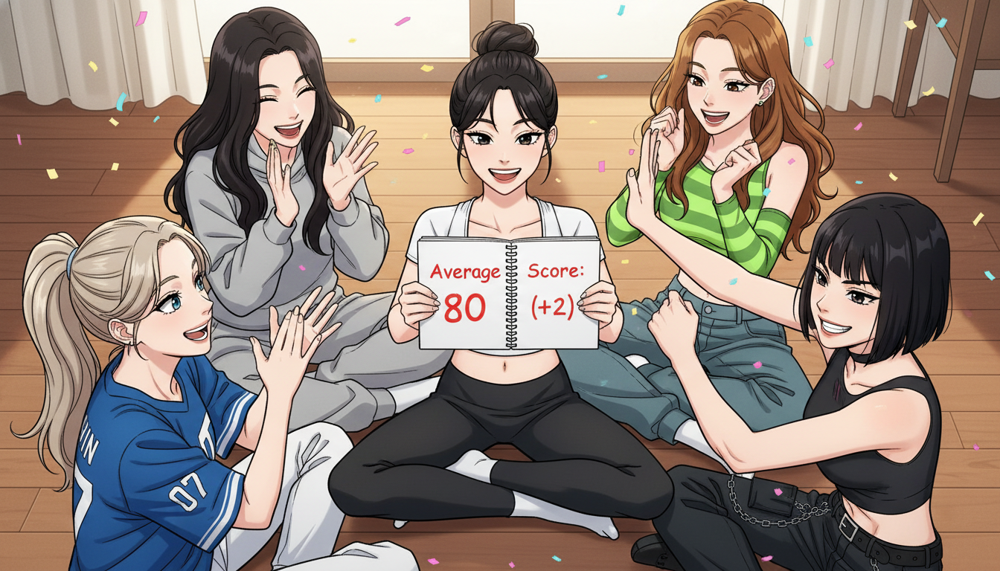
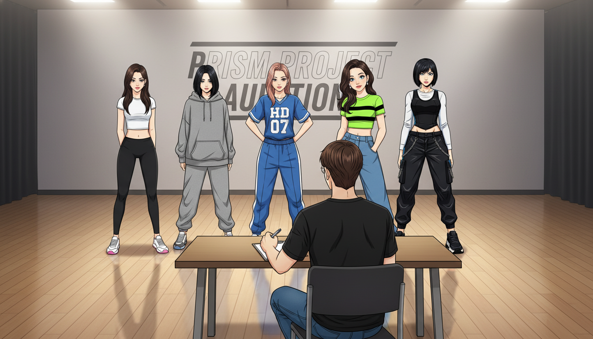
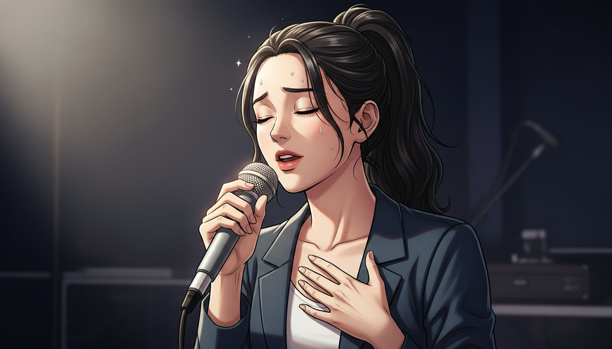
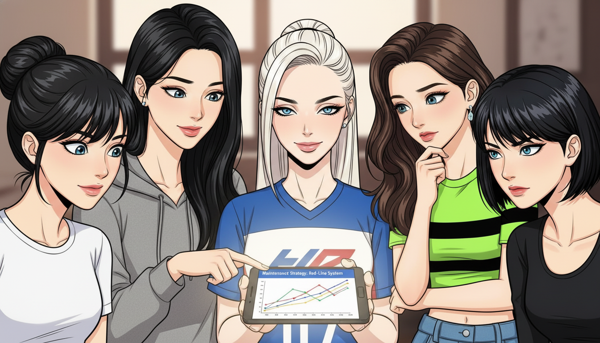
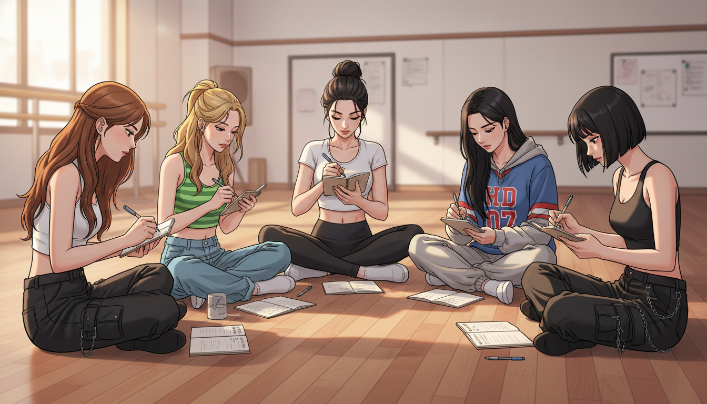
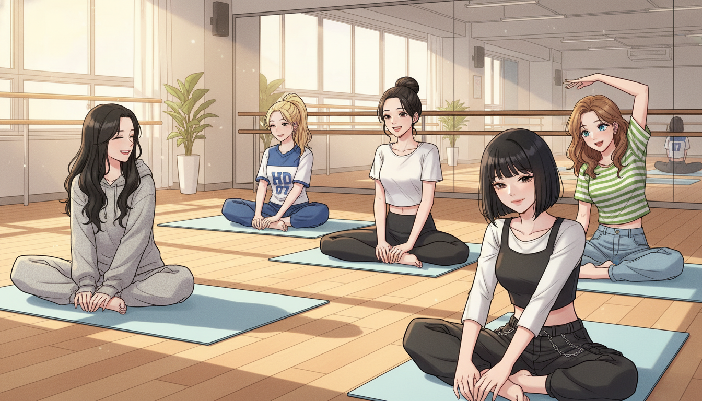

🎤 Dream High - K-POP 연습생 AI 성장기
Episode 16: 80점의 벽

1월 12일 일요일 오후 3시, 연습실. 5명이 원형으로 앉아 주간 회고 중.
1월 12일 (일)
2차 평가까지 D-20일
주간 회고. Week 4.
민지는 노트를 펼쳤다. 새 템플릿. Keep-Problem-Try.
데이터 수집:
| 항목 | 목표 | 실제 | 달성률 |
|------|------|------|--------|
| 개인 평균 점수 | +1점/주 | +2점 | 200% ✅ |
| 보컬 롱톤 | +1초/주 | +2초 | 200% ✅ |
| 팀 동기화 | 90점 유지 | 92점 | 102% ✅ |
민지가 말했다. "이번 주... 대박인디?"
채원이 계산했다. "개인 78점에서 80점. 드디어 목표 달성!"
아린이 휴대폰을 봤다. "Literally 80 points. We made it."
유나가 환호했다. "헐! 우리 80점 넘었어요!"
하늘이 주먹을 쥐었다. "ㅇㅈ. 2점 채웠다."
채원이 템플릿을 작성했다.
✅ Keep (잘된 점):
1. 주간 회고 템플릿 활용: 우선순위 명확, 액션 구체적
2. 화목 개인 집중 3시간: 피곤하지 않게 배분, 효과 높음
3. 매일 아침 컨디션 공유: 솔직한 피드백, 서로 도움
"템플릿... 진짜 효과 있네." 채원이 놀랐다.
민지가 고개를 끄덕였다. "ㅇㅈ. Keep-Problem-Try 쓰니까 뭘 해야 할지 명확하더라고."
⚠️ Problem (개선 필요):
| 문제 | 영향도 | 원인 | 해결 필요도 |
|------|--------|------|------------|
| 유나 고음 D5 불안정 | Medium | 호흡 짧음 | 🟡 |
| 하늘 표정 연기 경직 | Low | 긴장 | 🟢 |
"문제가... 별로 없네?" 유나가 물었다.
채원이 웃었다. "응. 80점 넘으니까 큰 문제는 해결됐어."
🔬 Try (다음 주 실험):
1. 80점 유지: 현재 루틴 계속, 정체 방지
2. 팀 동기화 95점 목표: 더 완벽한 타이밍
3. 2차 평가 시뮬레이션: 실전처럼 연습
아린이 물었다. "Why 95 points? 92 is already good."
채원이 설명했다. "2차 평가는 더 까다로워. 안전하게 95점 목표로 잡자."
민지가 적었다. "ㅇㅈ. 80점 넘었다고 방심하면 안 되는디."

5명이 2차 평가 시뮬레이션 중. 진지한 표정으로 연습.
1월 15일 (수)
2차 평가까지 D-17일
오후 2시. 팀 집중 블록.
박지훈이 들어왔다. "오늘은 2차 평가 시뮬레이션 할게요."
"네!" 5명이 대답했다.
"2차 평가는 두 부분이에요. 개인 평가 30분 + 팀 평가 30분. 총 1시간."
박지훈이 설명했다.
"개인 평가는 보컬, 댄스, 랩 각각 10분씩. 팀 평가는 그룹 안무 1곡."
민지는 긴장했다. 1시간. 집중력 유지가 관건이다.
"자, 개인 평가부터 시작. 민지, 보컬 먼저."

민지가 혼자 무대에서 보컬 테스트 중. 나머지 4명이 지켜본다.
민지가 무대에 섰다. 심사위원석에 박지훈.
"준비됐어요?"
"네..." 민지가 대답했다.
"10분 안에 보여줄 수 있는 걸 다 보여주세요. 시작!"
민지는 숨을 들이마셨다. 복식호흡.
"아~"
롱톤. 10초. 깨끗하게.
D5 고음. 떨림 없이.
"Love me, love me~"
멜로디. 감정. 표현.
10분이 순식간에 지나갔다.
"좋아요. 다음, 아린!"
30분 후. 개인 평가 종료.
5명 모두 마쳤다.
박지훈이 노트를 봤다. "개인 평가 점수..."
민지는 숨을 참았다.
"민지 82점, 아린 85점, 채원 78점, 유나 76점, 하늘 80점."
"평균..." 채원이 계산했다. "80.2점!"
박지훈이 고개를 끄덕였다. "좋아요. 80점 기준 통과. 이제 팀 평가."

5명이 팀 안무 중. 박지훈이 클립보드에 점수 기록.
팀 평가. 그룹 안무.
민지는 첫 카운트에서 시작했다. 8카운트 16마디.
타이밍. 맞았다.
표정. 자연스러웠다.
에너지. 높았다.
2분 30초. 끝.
엔딩 포즈. 5명이 동시에 멈췄다.
"...우수합니다." 박지훈이 박수를 쳤다.
"팀 동기화 94점. 거의 완벽해요."
민지는 안도했다. 94점. 95점 목표에 거의 도달.
"개인 80.2점, 팀 94점. 2차 평가 합격 기준을 넘겼어요."
채원이 물었다. "그럼... 우리 붙을 수 있어요?"
박지훈이 웃었다. "지금 수준이면 충분해요. D-17일 동안 이 상태만 유지하면 됩니다."

대기실. 5명이 서로 하이파이브하며 기뻐한다.
대기실. 5명이 앉았다.
"우리... 했어." 채원이 말했다.
아린이 웃었다. "80 points average. 94 for team. Insane."
유나가 눈물을 글썽였다. "진짜... 3개월 전만 해도 73점이었는데..."
하늘이 어깨를 두드렸다. "ㅇㅈ. 7점 올렸어."
민지는 노트를 봤다.
진행 상황:
- Week 1 (12/30): 73점
- Week 2 (1/5): 78점 (+5점)
- Week 3 (1/12): 80점 (+2점)
- Week 4 (1/15): 80.2점 (유지)
73점에서 80점까지. 17일 걸렸다.
채원이 말했다. "근데... 17일 남았어. 이제 유지가 문제야."
"What do you mean?" 아린이 물었다.
"80점 넘었다고 방심하면 다시 떨어질 수 있어. 한소연 선배처럼."
민지는 고개를 끄덕였다. 한소연. 68점으로 탈락. 2점 차이.
지금 우리는 80.2점. 기준은 80점. 0.2점 여유.
'여유가... 별로 없는디.'
유나가 물었다. "그럼... 어떻게 해야 해요?"
채원이 생각했다. "지금까지는... 성장에 집중했어. 73→80. 근데 이제는 유지가 목표야."
"Maintenance mode." 아린이 말했다.
"응. 80점을 계속 유지하면서, 컨디션 관리하고, 부상 방지하고."
하늘이 끼어들었다. "근데 그게... 더 어려운 거 아냐?"
채원이 한숨을 쉬었다. "맞아. 성장은 목표가 명확해. 근데 유지는... 언제 떨어질지 모르잖아."
민지는 생각했다. 그래. 지금까지는 "올리기"였다. 근데 이제는 "유지하기".
Claude한테 물어볼까? 80점 유지하는 방법.
민지는 휴대폰을 꺼냈다.
💡 Hands-On Tutorial: 민지's 80점 유지 전략
Real-world situation: 민지와 PRISM은 73점에서 80점까지 올리는 데 성공했다. 하지만 2차 평가까지 D-17일, 이제 목표는 "80점 유지". 성장 모드에서 유지 모드로 전환해야 하는데, 방심하면 다시 떨어질 수 있다는 불안감이 있다. 컨디션 관리, 부상 방지, 정체 탈출이 새로운 과제.
Copy-paste prompt:
당신은 {분야, 예: "K-POP 아이돌"} 피크 퍼포먼스 유지 전문가입니다.
{팀명, 예: "PRISM"}이 다음 상황입니다:
**현재 상태:**
- 목표 달성: {점수, 예: "73점 → 80점"}
- 평가까지 남은 기간: {기간, 예: "17일"}
- 새 목표: 유지 (하락 방지)
- 불안 요소: 방심, 컨디션 저하, 부상, 정체
**성장 모드 vs 유지 모드:**
성장 모드 (과거):
- 목표: 매주 +1-2점
- 전략: 고강도 훈련, 약점 집중 공략
- 리스크: 피로 누적 OK (성장 우선)
유지 모드 (현재):
- 목표: 80점 유지 (±0점)
- 전략: ?
- 리스크: 하락 방지, 컨디션 관리 필수
**우려 사항:**
1. 고강도 계속 → 번아웃, 부상 위험
2. 강도 낮춤 → 실력 하락 (정체)
3. 긴장 풀림 → 방심으로 실수 증가
80점 유지 전략을 만들어주세요:
1. **훈련 강도 조절**
- 고강도 vs 중강도 비율
- 휴식 vs 연습 균형
- 컨디션별 유연 대응
2. **컨디션 모니터링**
- 매일 체크 항목 (피로도, 부상 징후)
- 레드라인 (이 정도면 쉬어야 함)
- 회복 프로토콜
3. **정체 방지**
- 유지하면서도 날카로움 유지
- 루틴 변화 (지루함 방지)
- 작은 목표 (동기 유지)
4. **멘탈 관리**
- 80점 달성 → 방심 방지
- "거의 다 왔다" → 긴장 유지
- 마지막 스퍼트 타이밍
5. **비상 계획**
- 갑자기 하락 시 (79점 → 78점)
- 부상 발생 시
- 컨디션 급격 저하 시
출력 형식: 주간 계획 + 일일 체크리스트 + 비상 대응
What you'll get: 17일 동안 80점을 안정적으로 유지하는 전략. 고강도 훈련(주 2회)과 중강도 유지(주 3회)의 균형, 매일 아침 컨디션 체크리스트(10점 만점), 피로도가 7점 이상이면 강도 낮추는 레드라인 시스템, 그리고 만약 점수가 하락하면 즉시 대응하는 비상 프로토콜.
Try it yourself:
Example result:
# PRISM 80점 유지 전략 (D-17일)
## 1. 훈련 강도 조절 (Week by Week)
### Week 5 (D-17 ~ D-10): 안정화 주간
**목표**: 80점 유지 + 컨디션 최적화
| 요일 | 강도 | 활동 | 시간 | 목적 |
|------|------|------|------|------|
| 월 | 중강도 | 팀 연습 (안무 복습) | 3시간 | 타이밍 유지 |
| 화 | 고강도 | 개인 심화 (약점 보완) | 3시간 | 날카로움 유지 |
| 수 | 중강도 | 팀 연습 (표정 연기) | 3시간 | 완성도 |
| 목 | 저강도 | 가벼운 복습 + 스트레칭 | 2시간 | 회복 |
| 금 | 고강도 | 2차 평가 시뮬레이션 | 3시간 | 실전 감각 |
| 토 | 중강도 | 파트 교환 + 자유 연습 | 2시간 | 유연성 |
| 일 | 휴식 | 주간 회고 + 가벼운 연습 | 1시간 | 정신 회복 |
**비율**: 고강도 2회 / 중강도 3회 / 저강도 1회 / 휴식 1회
### Week 6 (D-9 ~ D-3): 파이널 점검
**목표**: 실전 감각 + 컨디션 피크
| 요일 | 강도 | 활동 |
|------|------|------|
| 월-수 | 중강도 | 실전 시뮬레이션 반복 (매일 1회) |
| 목 | 저강도 | 완전 회복 (마사지, 휴식) |
| 금-토 | 고강도 | 최종 리허설 (실전과 동일) |
| 일 | 휴식 | 멘탈 정리 |
### Week 7 (D-2 ~ D-Day): 테이퍼링
**목표**: 컨디션 100% 회복
| 요일 | 강도 | 활동 |
|------|------|------|
| D-2 | 저강도 | 가벼운 워밍업 (1시간) |
| D-1 | 초저강도 | 스트레칭 + 멘탈 (30분) |
| D-Day | 평가 | 2차 평가 |
## 2. 컨디션 모니터링 (매일 아침 9:00)
### 일일 체크리스트 (10점 만점)
**5명 전원이 개별 작성 → 평균 공유**
| 항목 | 1-10점 | 기준 |
|------|--------|------|
| 수면 질 | [점수] | 8시간+ 깊은 잠 = 10점 |
| 근육 피로도 | [점수] | 통증 없음 = 10점, 심한 통증 = 1점 |
| 목/성대 컨디션 | [점수] | 맑음 = 10점, 쉰 목소리 = 1점 |
| 정신 집중력 | [점수] | 집중 잘됨 = 10점, 산만 = 1점 |
| 동기/에너지 | [점수] | 의욕 높음 = 10점, 무기력 = 1점 |
**총점 평균**: [50점 만점]
### 레드라인 시스템 (즉시 조치)
| 총점 | 상태 | 조치 |
|------|------|------|
| 45-50점 | 🟢 최상 | 계획대로 진행 |
| 40-44점 | 🟡 주의 | 오늘 강도 -20% |
| 35-39점 | 🟠 경고 | 오늘 강도 -50%, 개인 연습 취소 |
| 34점 이하 | 🔴 위험 | 오늘 완전 휴식, 회복 집중 |
**원칙**: 레드라인 무시 금지. 단 하루 쉬는 게 3일 쉬는 것보다 낫다.
### 부상 징후 (즉시 트레이너 보고)
- [ ] 무릎 통증 (계단 오를 때 아픔)
- [ ] 발목 불안정 (삐끗한 느낌)
- [ ] 목 쉼 (2일 이상 지속)
- [ ] 어깨 통증 (팔 올릴 때 아픔)
- [ ] 허리 통증 (몸 숙일 때 아픔)
**하나라도 체크 → 즉시 중단, 의무실**
## 3. 정체 방지 (날카로움 유지)
### 문제: 같은 루틴 반복 → 지루함 → 집중력 ↓
**해결책:**
**A. 루틴 변화 (주 1회)**
- 월요일: 안무 순서 바꾸기 (인트로 ↔ 아웃트로)
- 수요일: 다른 곡으로 워밍업
- 금요일: 블라인드 연습 (눈 감고 타이밍)
**B. 작은 목표 (주간)**
- Week 5: 팀 동기화 94점 → 95점
- Week 6: 개인 평균 80.2점 → 81점
- Week 7: 실전 시뮬레이션 3회 연속 80점+
**C. 경쟁 요소 (재미)**
- 화요일: 개인 심화 시간 기록 갱신 (롱톤 10초 → 11초)
- 목요일: 팀 타이밍 게임 (0.1초 차이 내기)
**원칙**: 유지하되, 지루하지 않게.
## 4. 멘탈 관리
### A. 방심 방지
**80점 달성 ≠ 끝**
- 매일 아침 다짐: "오늘도 80점"
- 한소연 선배 사진 (복도): "2점 차이" 경고
- D-Day 카운트다운: "17일 → 16일 → ..."
### B. 긴장 유지
**"거의 다 왔다" 함정 조심**
- 70% 룰: "70% 왔다고 생각하면 안전"
- 매주 일요일 회고: "이번 주 실수 3가지" 돌아보기
- 트레이너 피드백: "아직 부족한 점" 명확히
### C. 마지막 스퍼트 타이밍
**D-3일부터: 긴장 최고조**
- D-10 ~ D-4: 중강도 (컨디션 회복 우선)
- D-3 ~ D-1: 멘탈 집중 (기술은 이미 완성)
- D-Day 아침: "우리는 준비됐다" 자기 암시
## 5. 비상 계획 (Contingency Plan)
### 시나리오 A: 점수 하락 (80 → 78점)
**원인 분석 (즉시):**
1. 컨디션 저하? → 휴식 증가
2. 훈련 부족? → 강도 증가
3. 멘탈 문제? → 회고 깊이 있게
**대응 (48시간 이내):**
- 화목 개인 심화 시간 +1시간
- 주말 추가 시뮬레이션 1회
- 트레이너 1:1 피드백 요청
**목표**: 1주일 내 80점 회복
### 시나리오 B: 부상 발생 (멤버 1명)
**경미한 부상 (무릎 통증, 목 쉼):**
- 해당 멤버: 개인 연습 중단, 팀 연습만 (강도 50%)
- 나머지 4명: 정상 진행
- 의무실 매일 치료
- 3일 내 회복 안 되면 → 중대한 부상 프로토콜
**중대한 부상 (발목 삐끗, 인대):**
- 해당 멤버: 완전 휴식 (1주일)
- 나머지 4명: 포메이션 재조정 (4인 안무)
- 회복 후: 집중 리허설 (3일)
**최악 (멤버 2명+):**
- 평가 연기 요청 (트레이너 통해)
- 전원 회복 우선
### 시나리오 C: 컨디션 급격 저하 (전원)
**증상**: 5명 평균 컨디션 35점 이하 (🟠-🔴)
**원인**: 과훈련, 수면 부족, 스트레스
**대응**:
- Day 1-2: 완전 휴식 (연습 0시간)
- Day 3: 가벼운 워밍업 (1시간)
- Day 4: 중강도 복귀 (2시간)
- Day 5: 정상 복귀
**원칙**: 컨디션 100% 회복이 실력보다 중요
## 6. 주간 점검표
**매주 일요일 회고 시 체크:**
- [ ] 이번 주 평균 점수: 80점 이상 유지? (✅/❌)
- [ ] 컨디션 평균: 40점 이상? (✅/❌)
- [ ] 부상 발생: 없음? (✅/❌)
- [ ] 레드라인 준수: 무시 안 함? (✅/❌)
- [ ] 작은 목표 달성: 1개 이상? (✅/❌)
**5개 모두 ✅ → 다음 주 계획대로**
**1개라도 ❌ → 비상 계획 실행**
## 7. D-Day 전날 체크리스트
**D-1일 (1월 26일) 확인 사항:**
### 기술적 준비:
- [ ] 안무 전체 1회 리허설 (영상 촬영)
- [ ] 개인 파트 녹음 (최종 체크)
- [ ] 의상/소품 준비 완료
### 컨디션:
- [ ] 5명 모두 컨디션 45점+ (🟢)
- [ ] 부상 없음
- [ ] 목소리 맑음
### 멘탈:
- [ ] 5명 원형 다짐: "우리는 준비됐다"
- [ ] 한소연 선배에게 마음 속 인사
- [ ] 숙면 준비 (일찍 취침)
**모든 항목 ✅ → 2차 평가 준비 완료!**
## 핵심 원칙 3가지
1. **80점 유지 = 성장 아님, 관리임**
- 고강도 줄이기 (주 2회만)
- 컨디션 우선 (점수는 따라옴)
2. **레드라인 절대 무시 금지**
- 35점 이하 → 무조건 휴식
- "조금만 더"는 부상으로 이어짐
3. **마지막까지 긴장**
- D-1일까지 방심 금지
- "거의 다 왔다" = 가장 위험한 순간

5명이 민지 휴대폰을 보며 유지 전략을 확인한다.
민지는 Claude 답변을 봤다.
80점 유지 전략. 훈련 강도 조절. 컨디션 모니터링. 레드라인 시스템.
"이거... 완전 디테일한디?" 민지가 중얼거렸다.
채원이 화면을 봤다. "고강도 주 2회, 중강도 3회... 성장 모드랑 다르네."
아린이 고개를 끄덕였다. "Smart. Maintenance mode needs different approach."
유나가 물었다. "컨디션 체크리스트... 매일 아침 해요?"
"ㅇㅈ." 민지가 답했다. "9시에 5분. 10점 만점으로."
하늘이 말했다. "레드라인 시스템 좋은데. 35점 이하면 무조건 쉬는 거."
다음날 아침 9시. 5명이 컨디션 체크리스트 작성 중.
1월 16일 (목) 오전 9시
2차 평가까지 D-16일
아침 컨디션 체크.
민지가 노트에 적었다.
민지 컨디션 (1/16):
- 수면 질: 9점 (8시간 깊은 잠)
- 근육 피로도: 8점 (약간 피곤)
- 목 컨디션: 10점 (맑음)
- 집중력: 9점 (좋음)
- 동기: 10점 (높음)
- 총점: 46/50 🟢 최상
채원이 자기 점수를 공유했다. "나는 44점. 🟢."
아린: "45점." 🟢
유나: "43점." 🟢
하늘: "42점." 🟢
팀 평균: 44점 🟢 최상
민지가 말했다. "오늘은 계획대로 진행이네."
"ㅇㅇ." 하늘이 동의했다. "오늘은 저강도 날이니까 편하게."
연습실. 5명이 가벼운 복습과 스트레칭 중. 여유로운 분위기.
오후 2시. 저강도 연습.
가벼운 안무 복습. 스트레칭. 표정 연습.
고강도가 아니었다. 땀도 별로 안 났다.
민지는 생각했다. '이렇게 해도 되나? 17일밖에 안 남았는디...'
채원이 민지를 봤다. "민지야, 괜찮아. 오늘은 회복하는 날이야."
"근디... 너무 쉬운 거 같아서..."
"그게 맞아." 채원이 설명했다. "유지 모드는 고강도 매일 하는 게 아니야. 주 2회만. 나머지는 컨디션 관리."
아린이 끼어들었다. "Yeah, 80 points maintenance, not growth. Different strategy."
민지는 고개를 끄덕였다. '그래... 성장이 아니라 유지니까.'
🎯 Learning Concept: "유지가 더 어렵다"
Level 4 Concept: Peak Performance Maintenance
민지는 깨달았다. 올리는 것보다 유지하는 게 더 어렵다.
73→80점 성장 모드: 목표 명확, 매일 발전, 동기 높음.
80점 유지 모드: 목표 모호, 정체 불안, 방심 위험.
AI는 성장 플랜도 만들어주고, 유지 전략도 만들어준다. 고강도와 저강도의 균형, 컨디션 체크, 레드라인 시스템.
하지만 매일 아침 9시에 솔직하게 컨디션을 체크하는 건 사람이다. 피곤해도 "괜찮아" 하지 않고, 35점이면 정말 쉬는 것.
Why it matters in K-POP: 데뷔 직전이 가장 위험하다. "거의 다 왔다"는 생각에 방심하거나, 반대로 불안해서 과훈련한다. 80점을 유지하려면 매일 자기를 정직하게 보고, 컨디션에 따라 강도를 조절해야 한다. 마지막 3주가 3개월보다 중요하다.
Remember (채원's advice): "유지 모드는 성장 모드와 달라. 컨디션이 점수를 만든다."
**[Episode 16 완료]**